The Night Owl
The foggiest night of the year, and the lighthouse keeper is a tiny old owl who cannot keep her eyes open. A ferry is feeling its way toward the rocks. Red Bull Sugarfree keeps the light on.
The AI style with the strongest sales evidence: one client ad reported still profitable after $80K spend and beating UGC, a reported 12% CTR and 5% CVR, a 3.8% vs 2.9% hook rate over human UGC, and 17% of one agency's 5,324 live ads. Animation lowers ad defences, makes a boring or functional product lovable, and lets the character's small problem stand in for the viewer's.
Contact sheet
One keyframe per shot, with the caption as it will appear.

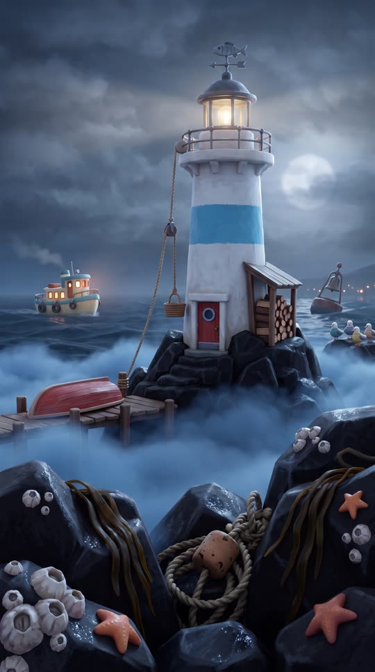
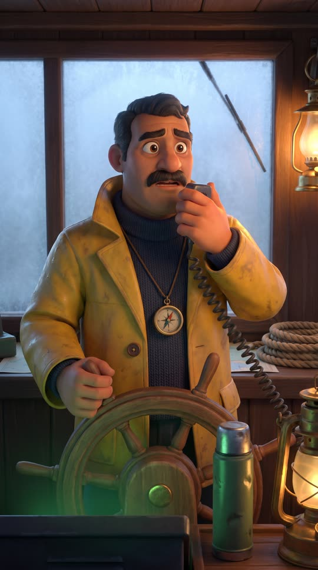
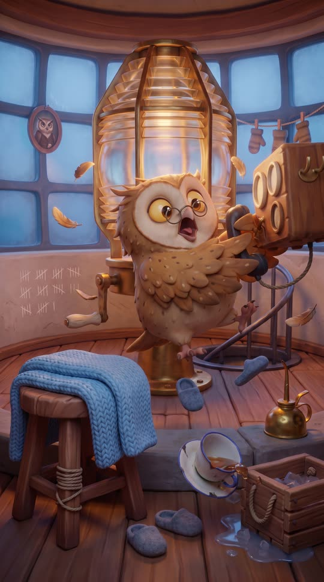
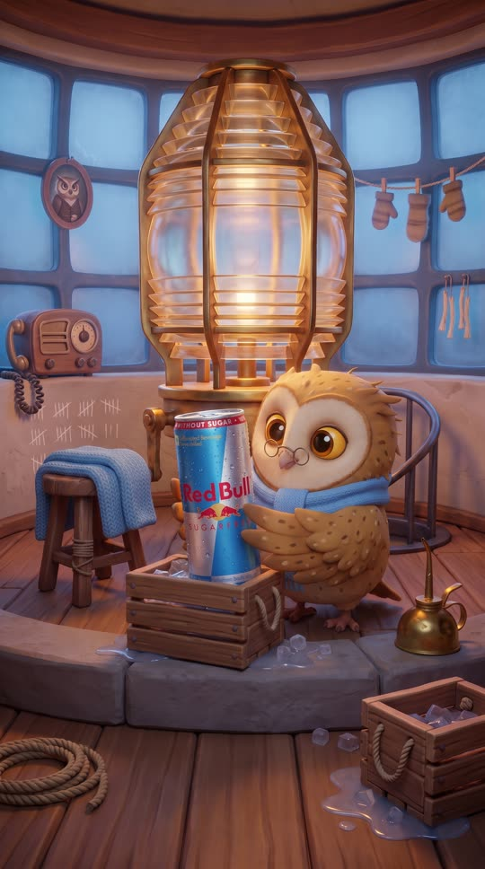


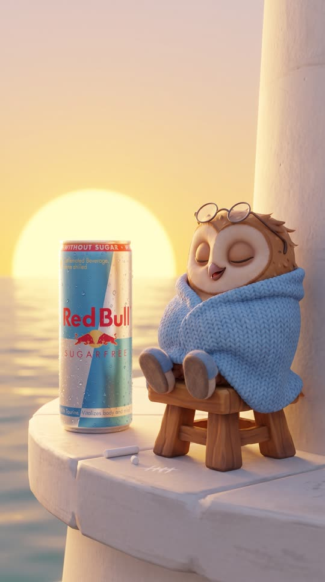
Cast and world
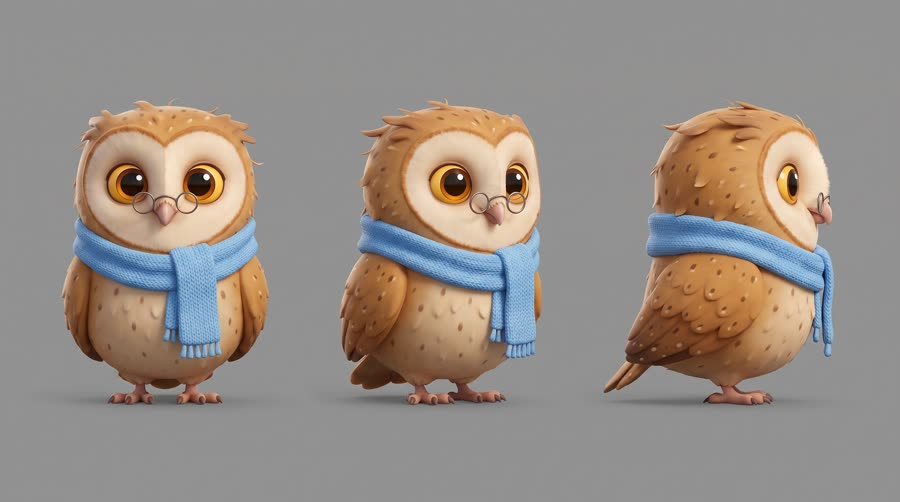
Voice: woman, 70s, warm and a little creaky, coastal Maine accent, sincere
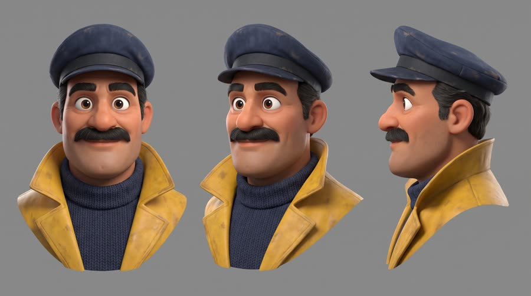
Voice: man, 40s, warm baritone, Latino American, New England fisherman steadiness
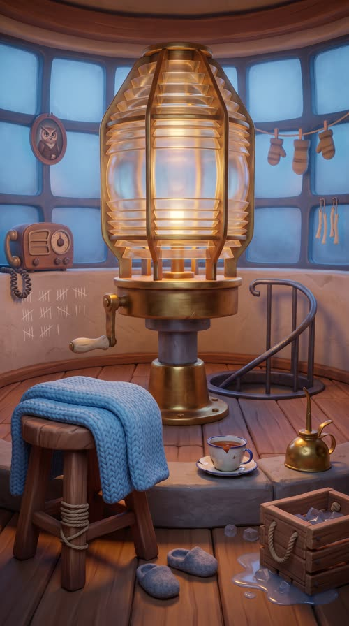
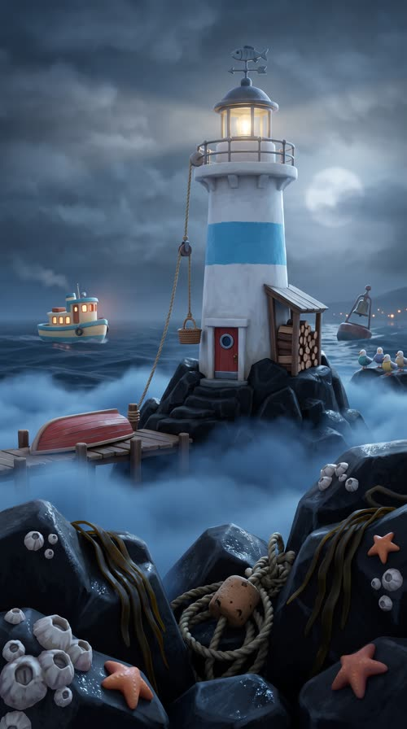
World. Point Hollow, a fictional rocky island lighthouse off a stylized New England coast, one foggy night until sunrise. Inside: a cosy round lamp room with a giant brass and glass lens, a knitted blanket on a stool, a small wooden ice crate. Outside: black rocks, rolling fog, and the little night ferry Marigold with warm cabin windows. Palette. Colour script built from the can: sky blue fog and silver moonlight for the problem, warm amber lamp light as the character accent, and the can's gold sun as the sunrise payoff.
Fictional brands. Point Hollow Light (the lighthouse, white tower with a sky-blue band, no lettering); Marigold (the night ferry, cream hull with a sky-blue stripe, the name is spoken only, never painted)
World bible
Fixed with the concept: the lore, the objects and the textures that make this world specific. Only product-adjacent props change per product.
- Mabel has kept Point Hollow Light for 52 years, and her mother kept it before her; a portrait of her mother in a keeper's cap hangs by the stairs.
- Point Hollow is a lump of black rock three miles off the fishing town of Grey Harbor. The lens must be wound by hand every hour or it slows and dims.
- Every ship she sees safely past gets one chalk tally mark on the curved lamp-room wall; after 52 years the marks climb higher than she can reach, so the newest ones are tiny and low.
- Captain Teo Reyes has run the Marigold, the last ferry of the night, for 18 years. Every Sunday he sends a crate of ice and groceries up to the gallery on a rope pulley, and they have never met face to face.
- Tonight is the thickest fog in forty years, and the Marigold is carrying twelve passengers home from the harvest fair.
Materials. Stylized 3D feature film craftsmanship: every object is slightly chunky with soft bevelled edges and pushed proportions (oversized rivets, fat rope, rounded brass, thick glass), hand-painted texture maps with visible brush grain, warm subsurface glow through wood, wool and feathers, edge wear painted as lighter scuffs, knitwear with big readable stitches. Nothing is photoreal except the product can.
Wear and time. A late October night, just before midnight to sunrise at 6:40. The thickest fog in forty years. The tea went cold hours ago, the ice in the crate is half melted, the brass is only polished where Mabel can reach, one window pane is patched, and the blanket has fallen off the stool.
Signature objects
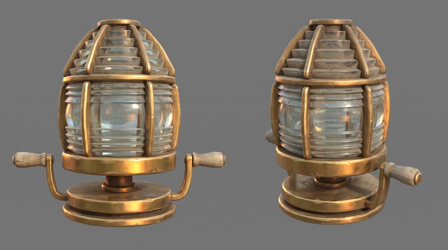
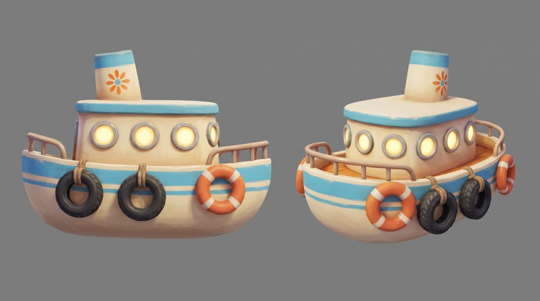
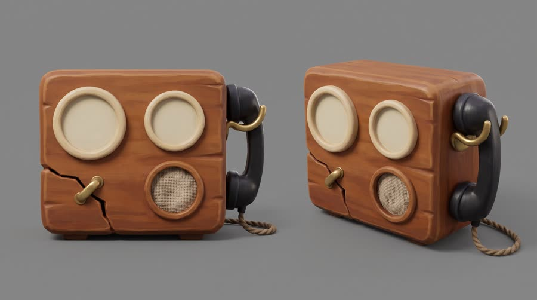
Set dressing by location
Foreground
a three-legged wooden stool with one leg mended in twine, a knitted sky-blue blanket slumped over it; a chipped enamel teacup of cold tea on a cracked saucer; a pair of tiny grey felted slippers kicked off by the stool; a small slatted wooden ice crate with rope handles on a low shelf, ice chips melting into a puddle; a brass oil can with a long curved spout, dented at the base
Midground
the giant faceted brass and glass lens on its round turntable, brass polished bright only as high as an owl can reach and dull above; the brass hand crank with a wooden handle worn pale and smooth; an old rounded radio set with two big dials and a coiled-cord handset on a hook; the curved plaster wall covered in bundles of white chalk tally marks in groups of five, rising in rows, the newest ones small and low; the iron spiral staircase rail coming up through a round floor hatch
Background
curved windows of small square panes, one cracked pane patched with a crossed strip of fabric plaster; thick blue fog pressing on the glass; a small oval portrait of an older owl in a keeper's cap by the stairs; a string of drying woollen mittens pegged along a line under the window; a bundle of spare wicks and a coil of fat rope hanging on a peg
Foreground
jagged black rocks slick with spray, crusted with white barnacles and a few orange sea stars; a tangle of old rope and a cork float wedged in a crack; long strands of dark kelp draped over the rocks
Midground
the white tower with a sky-blue band and a small red door with a round porthole at its base; a rope pulley line with a small basket running from the gallery down to a wooden jetty; an upturned red rowing boat on the jetty; a fish-shaped weathervane on the lantern roof; a lean-to woodshed with a stack of split logs
Background
a bell buoy tilting in the swell; the far-off harbour lights of the mainland as tiny warm dots; a silver moon smudged behind the fog bank; gulls asleep in a row on a rock
- Mabel: tiny round wire spectacles mended at the bridge with a twist of copper wire; a hand-knitted sky-blue scarf with one dropped stitch that has become a little hole; a stub of white chalk worn down to a nub; a small brass whistle on a string; the knitted blanket she has been mending for three winters
- Captain: a battered navy captain's cap with white salt stains and no badge; a yellow oilskin coat with one mismatched brown button; a dented green thermos with a chipped lid; a small brass compass on a leather cord round his neck
- Point Hollow Light: a white tower shape with one sky-blue band, white and sky blue. On: the tower itself, the side of the ice crate, Mabel's enamel teacup. Text in post: none
- Marigold (the ferry): a simple orange eight-petal flower, cream, sky blue and marigold orange. On: the funnel and the life rings. Text in post: none; the name is spoken only
the lens turntable's slow rumble and steady click; the crank ratchet clacking as it spins up; the Marigold's low fog horn; a bell buoy clanging in the swell; radio static and a crackling voice; ice chips clinking in the wooden crate; a big puff of ruffling feathers; the can crack echoing round the round room
Beats
| Time | Beat | What happens |
|---|---|---|
| 0-3 | hook | Mabel's huge eyes droop shut as the lamp behind her flickers; she tells herself to stay awake. |
| 3-8 | setup | Outside, the beam is dying in the fog while the ferry creeps toward the rocks; the captain radios in; Mabel jolts awake. |
| 8-14 | product | She lifts the can out of the ice crate (up to her chin), cracks it, sips, and her eyes pop wide. The brand line. |
| 14-22 | build | She throws her whole body on the crank, the lens roars to full blaze, the beam slices the fog and the ferry turns away from the rocks. |
| 22-27 | payoff | The ferry passes safely below, passengers wave lanterns, Mabel waves back from the gallery. |
| 27-30 | cta | Sunrise: the can on the gallery ledge, Mabel finally asleep in her blanket beside it. Tagline. |
Screenplay
38 spoken words in 30 s. Each line keeps its intent (fixed in the template) and its wording (written for this product).
| Time | Speaker | Line | Intent (template) |
|---|---|---|---|
| 0.4-2.6 | Mabel | Stay awake, Mabel. One more ship. mumbled, eyes closing, patting her own cheek with a wing | Hook: the hero admits the one thing she must not fail at tonight. |
| 4.8-6.8 | Captain | Point Hollow, we can't see a thing. You there? steady but worried, over a crackly radio | Raise the stakes: someone depends on her right now. |
| 7.1-8.1 | Mabel | I'm here! I'm here! startled awake, feathers everywhere, grabbing the handset | The jolt: she snaps back and commits. |
| 11.2-13.6 | Mabel | Red Bull Sugarfree. Wide awake, no sugar. bright and delighted after the sip, a little wink · Say: RED BULL SHUG-er-free, three clear words | Product line: name the product and the one benefit this story needs, from an allowed claim only. |
| 18.4-20.0 | Captain (off camera) | I see your light! Turning now. relieved, laughing, radio crackle | The world responds to the hero's comeback. |
| 23.6-24.8 | Mabel | Safe home, Marigold. soft and proud, waving | Payoff: the win in a few warm words. |
| 27.6-29.4 | Mabel (off camera) | Wiiings without sugar. sleepy whispered voiceover, smiling · Say: WINGS, stretch the vowel slightly | Tagline in the brand's own words. |
Generation plan
U1 · 0 to 8.4 s · 9 s generation
Shots S01, S02, S03, S04 · References: mabel card, teo card, lamp_room plate, lighthouse plate, S01 keyframe as first frame
9:16 stylized 3D animated feature film look, foggy night at a lighthouse, cool blue fog and warm amber lamp light, big expressive eyes, clean render. Shot 1 (0 to 2.8 s): close-up of @Image1 (Mabel, a tiny elderly owl in spectacles) in the lamp room, her eyes droop shut and her head nods while the lens behind her flickers; she mumbles, patting her cheek with a wing: "Stay awake, Mabel. One more ship." Shot 2 (2.8 to 4.6 s): wide exterior, the lighthouse on rocks in rolling fog, its beam weak and stuttering, a small ferry's warm windows creeping toward the rocks, a deep foghorn. Shot 3 (4.6 to 7 s): @Image2 (Captain Teo, stylized animated human) at the ferry wheel, fog on the windows, into a radio handset, worried: "Point Hollow, we can't see a thing. You there?" Shot 4 (7 to 9 s): quick whip pan to Mabel jolting awake, feathers puffed, spectacles askew, grabbing the radio: "I'm here! I'm here!" Squash and stretch, comic timing. Native sound: wind, waves, foghorn, radio crackle, feather flurry. No music. No text on screen. Hulls have no names.
U2 · 8.4 to 14.0 s · 6 s generation · exact-risk (short, cheap to re-roll)
Shots S05, S06 · References: product can official, mabel card, S05 keyframe as first frame
9:16 stylized 3D animated feature film look, warm lamp room. Shot 1 (0 to 2.4 s): locked insert, @Image2 (Mabel, the tiny owl) lifts the exact can from @Image1 out of a small ice crate with both wings; the can reaches up to her chin, her wing tips stay around the back and sides so the front label is fully visible, upright and undistorted. The can is a real photoreal printed aluminium object lit by the lamp; everything else is animated. Shot 2 (2.4 to 6 s): medium close-up, she cracks the can, takes one sip, her eyes pop wide open and sparkle, feathers fluff smooth, she lowers the can to chest height with the label to camera and says brightly with a wink: "Red Bull Sugarfree (said RED BULL SHUG-er-free, three clear words). Wide awake, no sugar." Keep the can's shape, colours, wordmark, bulls and gold sun exactly as @Image1; the can never bends. Native sound: ice, the can crack, a happy hoot. No music.
U3 · 14.0 to 26.6 s · 13 s generation
Shots S07, S08, S09 · References: mabel card, lamp_room plate, lighthouse plate, S07 keyframe as first frame
9:16 stylized 3D animated feature film look, the night turns to dawn. Shot 1 (0 to 3.4 s): low orbiting wide in the lamp room, @Image1 (Mabel, the tiny owl) hangs her whole body off the brass crank and cranks round and round, the giant lens spins up and blazes gold with a deep whoomph. Shot 2 (3.4 to 7.4 s): wide at sea, upright and level, the golden beam slices the fog and lights the rocks; the small cream ferry with a sky-blue stripe swings away and turns to safety; a man's voice over a crackly radio, relieved and laughing: "I see your light! Turning now." Shot 3 (7.4 to 13 s): high shot over Mabel's shoulder on the gallery railing, she waves a wing as the ferry passes below with tiny passengers waving lanterns, fog thinning to first dawn blue; she says softly, proud: "Safe home, Marigold." The ferry moves forward along its heading, no sideways sliding. Native sound: gears, lamp whoomph, foghorn, distant cheers. No music. No text, hulls have no names.
U4 · 26.6 to 30 s · 5 s generation · exact-risk (short, cheap to re-roll)
Shots S10 · References: product can official, mabel card, S10 keyframe as first frame
9:16 sunrise pack shot, stylized 3D animated world with one photoreal object. Slow push-in on the exact can from @Image1 standing upright on a white lighthouse gallery ledge, label to camera, droplets, golden sunrise rim light over a calm sea. Beside it @Image2 (Mabel, the tiny owl) sleeps on a stool wrapped in a knitted blanket, her chest rising and falling, a tiny snore. The can does not move or change shape. Clean empty sky above the can. Native sound: gulls, waves, the owl's snore. No music, no text.
Sound, music, voice, captions
| 0 to 8.4 s | lullaby | A sleepy celeste and music-box lullaby in F major, 72 bpm, with a low cello note that keeps dragging it flat as her eyes close; a pizzicato sting on the jolt awake. |
| 8.4 to 14.0 s | spark | The lullaby melody pops into a bright staccato pizzicato version at 110 bpm on the can crack, playful, leaving room for her line. |
| 14.0 to 26.6 s | triumph | Full orchestral lift of the same melody: strings and French horns swell as the lens blazes, a heroic brass statement as the ferry turns, then warm strings under the wave. |
| 26.6 to 30 s | button | Back to the celeste lullaby, soft and resolved, a final glockenspiel twinkle on the tagline. |
Added sound
- 11.0 s: can crack and fizz (the product moment must register; only added if the native crack is weak)
- 15.2 s: deep whoomph as the lamp roars to full (the story's turn must land as a physical event)
- Mabel: native voice from U1, then her U1 vocal stem as voice reference for U2, U3 and the whispered U4 tagline
- Captain: native in U1 through a radio filter; his U3 radio line uses the U1 stem as reference with the same filter
font: Nunito Black, size: 5.6% of frame height, color: #FFFFFF, active word: #FFD23F (the can's gold sun), others white, outline: 3px #10263F stroke (deep night navy) plus soft 0 3px 10px rgba(0,0,0,.45) shadow, box: False, position: centre, 70% down the frame, clear of the character's eyes and the platform UI safe zone, max words on screen: 3, motion: each word pops in from 90% to 100% scale over 4 frames with slight overshoot, like an animated title
Post text- 27.4 to 30 s: Red Bull Sugarfree / Wiiings without sugar (Nunito Black, white with a 3px deep navy outline, centred in the empty sky above the can, pops in from 90% scale over 6 frames)
Adaptation contract
How this same concept takes any physical product.
| Product type | Where it sits in the story | Scale |
|---|---|---|
| ingested | she drinks it in the lamp room to stay awake for the ship | the can reaches up to her chin; held in both wings |
| applied | she dabs it on in the lamp-room mirror to wake herself up (balm, face mist, eye cream) | wing tip |
| worn | the one thing she puts on to face the night (glasses, headlamp, scarf, socks) | body |
| handheld | the gadget she grabs to find the ship (torch, earbuds, radio, tracker) | both wings |
| carried | the bag she opens on the stool for the long night | bigger than her, a gag |
| home | the thing in the lamp room that keeps her going (lamp, chair, kettle, blanket, speaker) | room |
| consumable | the refill she pulls from the ice crate every stormy night | both wings |
Style bible
Look. Appeal first: big heads, big eyes (irises catch a highlight in every close-up), simple silhouettes that read in thumbnail. Shape language: round and soft for the hero, angular for threats. One idea per shot, staged against a contrasting value so the silhouette pops. Anticipation before every key action, squash and stretch on the big ones, a reaction take after the product moment. The product is shown at the character's scale so its size becomes a hug or a gag, and it is always the most physically real object in frame.
Camera. Virtual cinematography at character eye height. 35mm equivalent for staging, 50 to 85mm for faces, macro for the product. Smooth dolly, crane and orbit moves only; one push-in on the emotional beat; a quick comedic whip pan is the only permitted rough move. Locked-off inserts for the product so the label never warps.
Light and texture. Soft global illumination with a colour script by beat: cool blue night for the problem, a warm practical accent for the character, full warm gold for the resolution. Rim light on every character to separate it from the background, volumetric fog or dust to give beams shape. The product gets its own small key and a specular rim so the printed aluminium reads. Clean feature-animation render: subsurface scattering on skin, groomed fur or feathers, slightly stylized materials (wood grain simplified, metal softly bevelled), gentle depth of field. No film grain, no photographic noise, no chromatic aberration. The can alone keeps real printed-aluminium detail, condensation and specular highlights.
Pacing. A character in visible trouble inside the first second, a line by 2 s. Shots of 2 to 4 s, comedic timing as anticipation, action, reaction. The product beat is held at least 2 s with a clear take (eyes pop, feathers fluff). Fastest cutting in the build. One breath of stillness before the CTA.
Sound. Native sound from the generations: exaggerated but grounded foley (wind, creaks, gears), sincere big voice acting. One warm orchestral score (strings, celeste, pizzicato, a little brass for the triumph) stitched across units. Added sound only for events the viewer must register (the can crack, the lamp roaring on). No cartoon boings or slide whistles: the style is feature film, not Saturday morning.
Known failures.
- the model redraws the can as a cartoon can with an invented logo: say 'the exact can from the product reference, photoreal printed label, real object' and keep the product ref in every can shot
- animal hero drifts toward a realistic wildlife render or changes feather colour between shots: always 'stylized animated character, oversized eyes' plus the cast card
- wings or paws holding the can pass through it or cover the wordmark: say 'wing tips wrapped around the back and sides of the can, front label fully visible'
- can scale jumps between shots: state its size relative to the character every time (here: the can is as tall as the owl's body)
- can scale jumps between shots: state its size relative to the character every time (here: the can reaches up to the owl's chin); a first roll of S05 made the can twice her height and hid her behind it
- wide exteriors in 9:16 come back rotated: say 'upright vertical composition, level horizon'
- night scenes go muddy and dark: keep the character rim lit and the key practical warm so the silhouette reads
- a human character next to a small animal becomes photoreal: say 'stylized animated human in the same feature film style'
- when the character peeks from behind the product, the model loses her identity (face turned brown, markings changed): keep the character fully visible beside the product and restate her key markings
- depth pass: a busy lamp room can bury the small owl: keep the tally wall and props in the background and midground, and a clean darker patch of wall around her head
- tally marks on walls can turn into numbers or letters: say bundles of five short chalk strokes, no numbers, no letters
- prop reference sheets come back with printed caption labels (front view, prop details, a title): say no captions, no labels, no annotation text anywhere on the sheet
- life rings and hull sides on boats grow painted names (a ferry sheet printed a ship name on the life ring): say plain life ring with white bands and nothing written on it
- a set-dressed ferry bridge grew a red drink can with a readable word on it: in any shot without the product say no cans, bottles or drink packaging anywhere
- busy sea wides duplicated the ferry and dropped a stray can on the rocks: say only one ferry in the frame, no cans or litter
- a close-up background turned the tally wall into a chalkboard with readable numbers and a word: say plaster wall with short chalk strokes in bundles of five, no chalkboard, no numbers, no words
- with a richer set the model stages the owl on a step or stool beside the can so the can outgrows her: anchor the owl, the crate and the can on the same floor plane and say where the can bottom is
Claims and cost
Claims used (all from the product page): Caffeine helps to improve concentration and increase alertness (as 'wide awake'); Same benefits of the original Energy Drink, without sugar (as 'no sugar' and the tagline)
Video estimate: 33 s of generation at $0.27/s = $8.91 first pass, $20 to 30 with retakes, plus about $1.5 music.